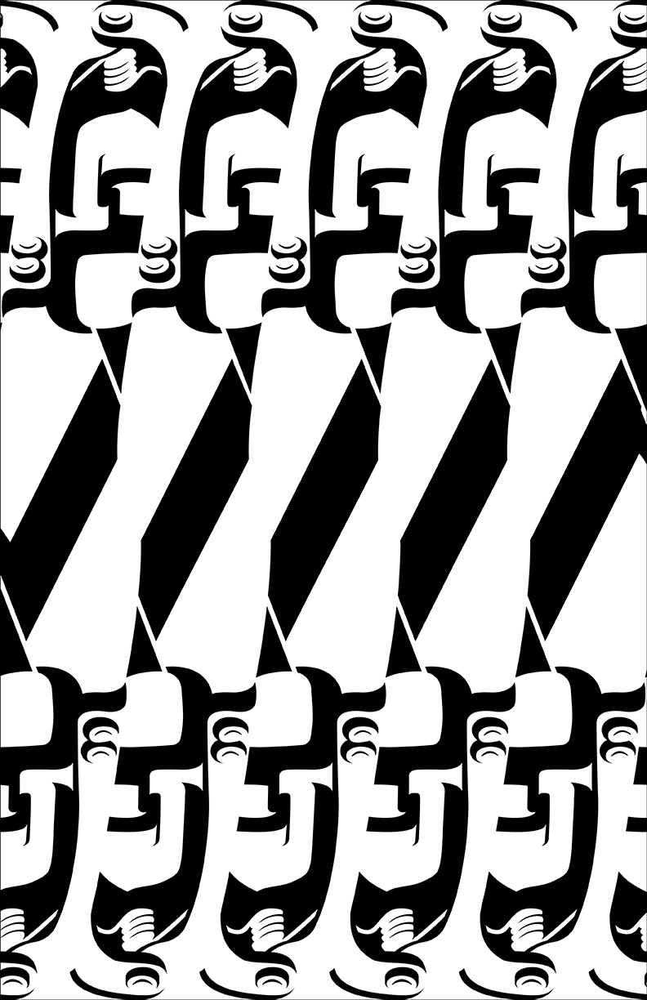
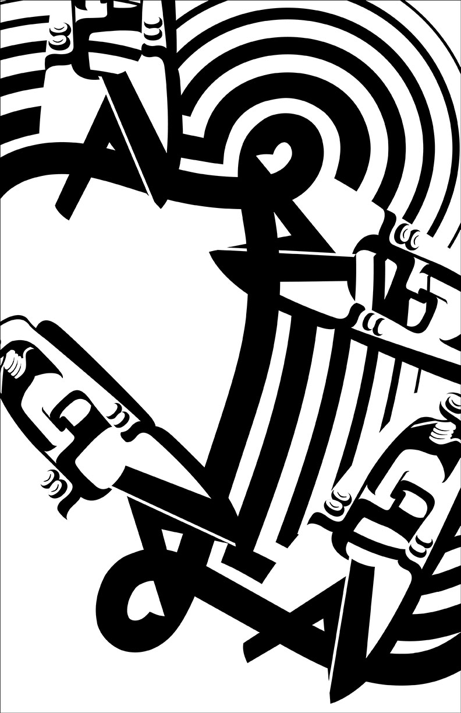

OBJECT POSTER CONCEPTS
My two posters explore contrasting perceptions of my plant shears. The first emphasizes the object's structural qualities, highlighting abstract forms and geometric precision through a linear, repetitive composition. In contrast, the second poster captures the shears dynamically, using fluid, organic lines that mimic the act of cutting stems. Together, the two pieces demonstrate the mechanical and expressive nature of the object, creating a dialogue between function and form.